측량및지형공간정보기사 (2004-09-05 기출문제)
1과목: 측지학 및 위성측위시스템
1. 다음 설명 중 옳지 않은 것은?
- 측지학은 지구내부의 특성, 지구의 형상 및 운동을 결정하는 측정과 지구표면상 점간의 위치관계를 선정하는 측량에 기본이 되는 학문이다.
- 지각변동의 측정, 항로 등의 측량은 평면측량으로 한다.
- 측지측량은 지구의 곡률을 고려한 정밀한 측량이다.
- 측지학에서는 지구의 측정을 위한 물리학적 측지학과 측량을 위한 기하학적 측지학으로 나눈다.
(정답률: 69%)

2. 구면삼각형 ABC의 세각을 관측한 결과 A=50° 10′, B=66° 35′, C=64° 15′ 이었다면 이 구면삼각형의 면적은? (단, 구의 반경은 5m 이다.)
- 0.736m2
- 0.536m2
- 0.636m2
- 0.436m2
(정답률: 72%)
3. 다음의 측지선에 대한 설명 중 옳지 않은 것은?
- 지표면상 2점을 잇는 최단거리가 되는 곡선을 측지선이라 한다.
- 두 개의 평면곡선의 교각을 2:1로 분할하는 성질이 있다.
- 평면곡선과 측지선 길이의 차는 극히 미소하여 무시할 수 있다.
- 계산이 불가능하므로 직접 관측하여 구하여야 한다.
(정답률: 89%)
4. 다음중 수평위치 결정에 관한 측량이 아닌 것은?
- 삼각측량
- 다각측량
- 수준측량
- 삼변측량
(정답률: 83%)
5. 성과표 상에서 P점좌표(+6882.95m, -9333.01m), Q점좌표(+4150.86m, -9622.40m)를 얻었다. P와 Q점간의 평면거리를 구하면 얼마인가?
- 2747.37m
- 2442.70m
- 2732.09m
- 289.37m
(정답률: 29%)
6. 다음 중 GPS측량에 있어서 사이클슬립(cycle slip)의 주된 원인은?
- 위성의 높은 고도각
- 낮은 신호 잡음
- 나무, 교량 밑 등의 장애물
- 높은 신호 강도
(정답률: 79%)
7. 자침의 복각에 대한 설명 중 옳지 못한 것은?
- 복각은 적도 지방에서는 거의 0에 가깝다.
- 복각은 자북으로 갈수록 커진다.
- 복각은 진북에서 최대가 된다.
- 복각은 지각 내에서 철광이 있으면 비정상적으로 크게 나타난다.
(정답률: 67%)
8. 서울지방의 자침 편각이 W 6.5° 이고 복각은 N 57° 이라면 다음 설명 중 맞는 것은?
- 서울에서 진북은 자침의 N극보다 서쪽으로 57° 방향이다.
- 서울에서 진북은 자침의 N극보다 동쪽으로 6.5° 방향이다.
- 서울에서 자침의 N극은 수평선보다 6.5° 기운다.
- 서울에서 자침의 S극은 수평선보다 6.5° 기운다.
(정답률: 88%)
9. 다음 중 균시차를 바르게 표시한 것은?
- 균시차 = 시태양시 - 평균태양시
- 균시차 = 평균태양시 - 표준시
- 균시차 = 세계시 - 태양시
- 균시차 = 항성시 - 세계시
(정답률: 82%)
10. 다음 중 UTM좌표계에 대한 설명으로 옳은 것은?
- 각 구역은 서쪽방향으로 10° 간격으로 1부터 번호를 붙인다.
- 지구 전체를 경도 6° 씩 60구역으로 나눈다.
- 위도는 남, 북위 60° 까지만 포함한다.
- 위도 80° 이상의 양극지역의 좌표도 포함된다.
(정답률: 88%)
11. 다음 중 GPS 시스템 오차 원인과 가장 거리가 먼 것은?
- 위성 시계 오차
- 위성 궤도 오차
- 코드 오차
- 전리층과 대류권에 의한 오차
(정답률: 87%)
12. 천체를 포함하는 천구는 지구의 자전때문에 하루에 한번씩 동쪽에서 서쪽으로 회전하는 것 처럼 보이는데 이것을 천구의 무슨 운동이라 하는가?
- 회전운동
- 전체운동
- 자진운동
- 일주운동
(정답률: 84%)
13. 중력이상을 보정할 때 관측값으로부터 기준면 사이에 질량을 무시하고 기준면으로부터 높이(또는 깊이)의 영향을 고려하여 실시하는 보정은?
- 부게보정(Bouguer correction)
- 후리-에어보정(Free-air correction)
- 지각균형보정(Isostatic correction)
- 에토베스보정(Eotvos correcton)
(정답률: 63%)
14. 인공위성과 관측점간의 거리를 결정하는데 사용되는 주요 원리는?
- 다각법
- 세차운동의 원리
- 음향관측법
- 도플러 효과
(정답률: 93%)
15. 지구의 자전축이 황도면의 수직방향에 대하여 약 23.5° 의 각반경을 가지고 26,000년을 주기로 회전하는 현상을 무엇이라고 하는가?
- 장동(nutation)
- 세차(precession)
- 균시차(equation of time)
- 일주운동(diurnal motion)
(정답률: 57%)
16. 중력에 대한 설명 중 옳지 않은 것은?
- 중력이상이 나타나는 지역은 구성물질의 밀도가 고르게 분포되어 있지 않다.
- 중력의 단위는 gal로 표시한다.
- 중력이상이 (+)이면 그 지역에 가벼운 물질이 있다는 것을 의미한다.
- 중력측정의 결과에 대해 지형보정, 고도보정, 아이소스타시 보정을 한다.
(정답률: 88%)
17. 다음중 물리학적 측지학에 해당 되는 것은?
- 3차원 위치 결정
- 중력 측정
- 사진 측정
- 위성 측지
(정답률: 44%)
18. 다음 중 GPS에 관한 설명이 틀린 것은?
- 3차원 측량을 동시에 할 수 있다.
- 두개의 주파수를 사용하여 신호를 전송한다.
- 지구를 크게 3개의 지역으로 분할한 지역 기준계를 사용한다.
- 약 0.5 항성일의 궤도 주기를 가지고 있다.
(정답률: 86%)
19. GPS에서 두개의 주파수를 사용하는 이유는?
- 전리층의 효과를 제거(보정)하기 위해
- 대류권의 효과를 제거(보정)하기 위해
- 시계오차를 제거(보정)하기 위해
- 다중 반사를 제거(보정)하기 위해
(정답률: 82%)
20. GPS를 이용한 측량중 가장 정밀한 위치결정 방법은?
- 스테틱(Static)측량
- 키네마틱(Kinematic)측량
- DGPS
- RTK
(정답률: 84%)
2과목: 응용측량
21. 하천측량에서 영구적인 양수표를 설치하려고 할 때 위치조건으로 부적당한 곳은?
- 수류 방향의 변화가 큰 장소
- 유실, 세굴, 파손의 위험이 없는 장소
- 유량 관측소의 부근
- 유수부분의 형상과 하상의 변화가 작은 장소
(정답률: 94%)
22. 측량결과가 그림과 같을 때 토량의 외부출입이 없다면 이 지역의 계획고는?
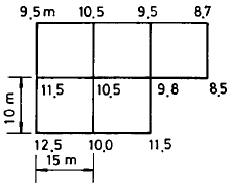
- 10.175m
- 10.218m
- 10.255m
- 10.318m
(정답률: 74%)
23. 하천의 유속측정을 위하여 그림과 같이 표면부자를 수면에 띄우고 A점을 출발하여 B점을 통과하는 데 소요되는 시간은 2분20초이었다. AB 두점 사이의 거리가 20.5m일 때 유속은? (단, 큰 하천에 대한 계수(부자고)는 0.9임)
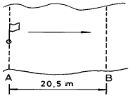
- 0.113m/sec
- 0.132m/sec
- 0.146m/sec
- 0.277m/sec
(정답률: 85%)
24. 경관측량은 녹지와 여공간을 이용하여 도시공원조성이나 토목구조물 등이 자연환경과 어울어진 쾌적한 인간의 생활공간을 창조하는 데 이용되는 것으로 경관측량시 고려해야할 경관의 3요소와 가장 관계가 먼 것은?
- 조화감
- 순화감
- 미의식의 상승
- 시대감
(정답률: 93%)
25. 단곡선을 설치할 때 교각이 60° , 곡선 반지름이 500m일 때 곡선장(C.L) 및 접선장(T.L)은?
- C.L=524.62m, T.L=286.60m
- C.L=523.60m, T.L=288.68m
- C.L=525.57m, T.L=285.65m
- C.L=521.62m, T.L=289.63m
(정답률: 8%)
26. 지상 및 지하시설물 등에 대한 지도 및 도면등 제반 정보를 수치 입력하여 효율적으로 운영 관리하는 종합적인 관리체계를 무엇이라 하는가?
- SIS(Surveying Information System)
- CAD체계
- AM(Automated Mapping)
- FM(Facilities Management)
(정답률: 79%)
27. 노선측량의 순서를 도상계획, 예측, 실측 및 공사측량으로 시행할 때 다음 중 옳지 않은 것은?
- 실측에는 중심선 설치, 종.횡단측량, 용지측량, 시공측량 등이 있다.
- 예측은 답사에서 얻은 유망한 노선에 대하여 더욱 자세하게 조사한 후 현장에 곡선 설치를 하는 단계이다.
- 용지측량은 노선구역에 대한 지가 보상 문제 등의 자료로 이용된다.
- 시공측량은 설계되어 있는 대로 현장에서 공사를 진행하기 위한 측량이다.
(정답률: 82%)
28. 그림과 같이 토지를 면적비 m:n=1:3으로
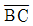
에 평행하게 분할하였다.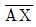
의 거리가 20m라면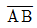
의 거리는?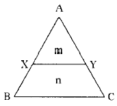
- 20m
- 30m
- 40m
- 50m
(정답률: 80%)
29. 터널 측량결과 입구 A와 출구 B의 좌표가 다음과 같을 때 AB의 방위각은?
- 38° 30'21"
- 218° 30'21"
- 141° 29'39"
- 87° 45'52"
(정답률: 50%)
30. 하천에서 2점법으로 평균 유속을 구할 경우, 수면에서 수심의 어느 두 점을 택하여 유속의 평균값을 유속으로 산정하는가?
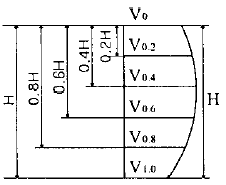
- 0.2H, 0.8H 지점
- 0.4H, 0.8H 지점
- 0.2H, 0.6H 지점
- 0.4H, 0.6H 지점
(정답률: 86%)
31. 경관측량에서 시준선과 시설물 축선이 이루는 각(A)의 분포중 입체감이 있고 계획이 잘된 경관을 얻을 수 있는 경우는?
- 0° ≤ A ≤ 10° 일 때
- 10° ≤ A ≤ 30° 일 때
- 30° ≤ A ≤ 90° 일 때
- 90° ≤ A ≤ 120° 일 때
(정답률: 94%)
32. 갱내에서 차량 등에 의하여 파손되지 않도록 콘크리트 등을 이용하여 만든 중심말뚝을 무엇이라 하는가?
- 도갱(導坑)
- 레벨(level)
- 자이로(gyro)
- 도벨(dowel)
(정답률: 74%)
33. 교각이 50° 30′ 이고 곡선반경이 300m일 때 단곡선을 중앙종거에 의하여 설치하고자 한다. 세 번째 중앙종거 M3는 얼마인가?
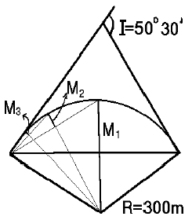
- 28.662m
- 7.254m
- 1.818m
- 0.456m
(정답률: 93%)
34. 다음 중 완화곡선에 대한 설명으로 옳지 않은 것은?
- 완화곡선 반경은 완화곡선의 시점에서 무한대, 종점에서 원곡선의 반경(R)으로 된다.
- 완화곡선의 접선은 시점에서 곡선에, 종점에서 직선에 접한다.
- 완화곡선에 연한 곡선 반경의 감소율은 캔트의 증가율과 같다.
- 종점에 있는 캔트(cant)는 원곡선의 캔트(cant)와 같게 된다.
(정답률: 12%)
35. 아래 표는 어느 노선의 구간별 토량계산 결과이다. 구간 4까지의 누가토량은 얼마인가?
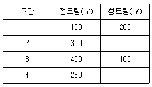
- 750m3
- 1⑤0m3
- 1350m3
- 1400m3
(정답률: 89%)
36. 철도노선에서 곡선부를 통과하는 차량에 원심력이 발생하여 접선방향으로 탈선하려는 것을 방지하기 위해 바깥쪽 철로를 안쪽 철로보다 높이는 것을 무엇이라 하는가?
- 캔트(Cant)
- 슬랙(Slack)
- 완화곡선
- 반향곡선
(정답률: 86%)
37. 다음중 도로의 종단곡선으로 많이 쓰이는 곡선은?
- 3차 포물선
- 2차 포물선
- 클로소이드 곡선
- 렘니스케이트 곡선
(정답률: 65%)
38. 터널측량은 크게 갱외측량, 갱내측량, 갱내외 연결측량으로 나누어지며, 일정한 작업순서를 가진다. 다음 중 터널측량 작업순서가 올바른 것은?
- 예측→답사→지표설치→지하설치
- 답사→예측→지표설치→지하설치
- 예측→답사→지하설치→지표설치
- 답사→예측→지하설치→지표설치
(정답률: 86%)
39. 대축척인 지적도를 작성하는 데에는 일반적으로 기존의 삼각점만으로는 충분하지 않다. 이때 필요한 기준점 설치를 위한 기초측량에 해당되지 않는 것은?
- 지적도근측량
- 세부측량
- 지적삼각보조측량
- 지적삼각측량
(정답률: 80%)
40. 상.하수도시설, 가스시설, 통신시설 등의 건설 및 유지관리를 위한 자료제공의 역할을 하는 측량은?
- 초구장측량
- 관계배수측량
- 건축측량
- 지하시설물측량
(정답률: 30%)
3과목: 사진측량 및 원격탐사
41. 평탄지를 촬영고도 1500m로 촬영한 연직사진이 있다. 이 두사진 상에서 2점간의 시차차를 측정하니 4mm이었다면 이 두점간의 비고는? (단, 카메라의 화면거리 153mm, 화면의 크기 23cm× 23cm, 종중복도 60%임)
- 19.6m
- 32.6m
- 39.2m
- 65.2m
(정답률: 0%)
42. 다음 중 항공사진 촬영에 대한 틀린 설명은?
- 넓은 지역을 촬영할 경우에는 일반적으로 남북방향으로 촬영한다.
- 촬영코스는 촬영지역을 완전히 덮고 코스 사이의 중 복도를 고려하여 결정한다.
- 도로, 하천과 같은 선형물체를 촬영할 때는 이것에 따른 직선코스를 조합하여 촬영한다.
- 촬영은 구름이 없는 쾌청일의 오전10시부터 오후2시 정도가 좋다.
(정답률: 74%)
43. 사진의 경사와 지표면의 비고를 수정하고 등고선을 삽입한 사진지도는?
- 정사투영 사진지도(orthophoto map)
- 조정집성 사진지도(controlled mosaic photo map)
- 약조정집성 사진지도(uncontrolled mosaic photo map)
- 반조정집성 사진지도(semi-controlled mosaic photo map)
(정답률: 47%)
44. 항공사진의 특수 3점이 아닌 것은?
- 주점(主点)
- 지표점(指標点)
- 연직점(鉛直点)
- 등각점(等角点)
(정답률: 88%)
45. 지상사진측량에 관한 설명으로 옳지 않은 것은?
- 지상사진은 항공사진에 비하여 평면정도는 낮으나 높이의 정도는 좋다.
- 지상 입체 사진측량의 방법으로 물체의 3차원 위치를 구하는 방법으로서는 도해법, 기계법, 해석법 등이 있다.
- 지상사진측량은 후방교회법으로서 항공사진측량에 비해 기상변화의 영향이 크다.
- 지상사진측량은 문화재 조사 및 기록보존, 구조물의 변위측정, 고고학, 기상변화 등을 측정하는 경우에 유리하다.
(정답률: 63%)
46. 다음 중 항공사진의 보조자료가 아닌 것은?
- 사진지표(Fiducial mark)
- 부점(Floating mark)
- 촬영고도
- 수준기
(정답률: 86%)
47. 편위수정에 있어서 만족해야할 3가지 조건을 기술한 내용 중 옳지 않은 것은?
- 기하학적 조건
- 광학적 조건
- 샤임프러그 조건
- 템프릿트 조건
(정답률: 74%)
48. 사진측량의 장점이 아닌 것은?
- 동적측량이 가능하다.
- 기상조건에 영향을 거의 받지 않는다.
- 측량의 정확도가 균일하다.
- 분업화에 의한 작업능률성이 높다.
(정답률: 93%)
49. 기계적 절대표정에 필요한 최소의 기준점 수는?
- 2점의 (x, y)좌표 및 1점의 z좌표
- 2점의 (x, y, z)좌표 및 1점의 z좌표
- 3점의 (x, y)좌표 및 1점의 z좌표
- 3점의 (x, y, z)좌표 및 2점의 z좌표
(정답률: 80%)
50. 인공위성영상으로부터 벡터구조의 토지이용분류도를 작성하여 저장하기 위한 순서를 바르게 나타낸 것은?
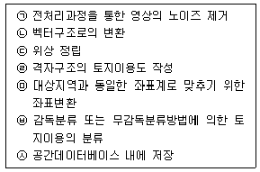
- ㉠-㉤-㉥-㉣-㉡-㉢-㉦
- ㉠-㉥-㉣-㉡-㉢-㉤-㉦
- ㉠-㉤-㉡-㉢-㉥-㉣-㉦
- ㉠-㉥-㉣-㉤-㉢-㉡-㉦
(정답률: 80%)
51. 불규칙삼각망(TIN)에 의해 지형을 표현하는 방식의 특징을 나타낸 것들 중 맞지 않는 것은?
- 벡터구조로서 지형데이터의 표현을 위한 위상을 가진다.
- 격자방식과 비교하여 비교적 적은 자료량을 사용하여 전반적인 지형의 형태를 나타낼 수 있다.
- 고도값의 표현에 있어서 동일한 밀도의 동일한 크기의 격자를 사용한다.
- 손쉬운 자료의 편집과 실시간 지표면의 모델링 등 다양한 기능을 제공한다.
(정답률: 0%)
52. 사진면의 크기가 23cm× 23cm의 사진기로 평탄한 토지를 엄밀수직으로 촬영하였다. 이때 비행고도가 4500m로서 사진면에 촬영된 토지면적이 47.6km2이었다. 이 사진기의 초점거리는?
- 8.8cm
- 13.2cm
- 15.0cm
- 21.2cm
(정답률: 19%)
53. 다음 중 사진의 왜곡의 보정 방법이 아닌 것은?
- 중심투영 방법
- Porro-Koppe의 방법
- 보정판을 사용하는 방법
- 화면거리를 변화시키는 방법
(정답률: 60%)
54. 초점거리 152mm, 경사각 3.6° 로 평지를 촬영한 항공사진에서 등각점과 주점 간의 사진상 거리는?
- 4.8mm
- 5.3mm
- 9.6mm
- 10.6mm
(정답률: 84%)
55. 사진판독에 대한 설명 중 부적당한 것은?
- 사진판독은 촬영된 시기 및 시각과 지방의 특색에 주의해야 한다.
- 지형은 실체시에 의하면 산지, 화산 등의 판독이 가능하다.
- 사진의 질감에는 인위적인 것과 자연적인 것이 있다.
- 사진판독에 있어서는 참고문헌이나 지도 등을 비교하여 판단하는 것은 선입감 때문에 나쁘다.
(정답률: 93%)
56. 수치지형모형(DTM)으로부터 추출할 수 있는 정보로 가장 거리가 먼 것은?
- 경사분석도
- 가시권 분석도
- 사면방향도
- 토지이용현황도
(정답률: 93%)
57. 다음 중 지리정보의 형태를 도형정보와 속성정보로 구분 할 때 도로와 관련된 속성정보에 해당되지 않는 것은?
- 도로 형상
- 도로 길이
- 포장 재질
- 준공일자
(정답률: 89%)
58. 부울(Boolean) 논리를 적용한 레이어의 중첩에서 그림의 빗금친 부분과 같은 논리연산을 바르게 나타낸 것은?
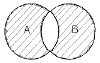
- A AND B
- A OR B
- A NOT B
- A XOR B
(정답률: 80%)
59. 촬영고도 5000m인 연직사진상의 비고 500m인 야산을 광각카메라를 이용하여 촬영하였을 때 사진축척은?
- 약 1/20000
- 약 1/30000
- 약 1/36600
- 약 1/50000
(정답률: 82%)
60. 다음 중 보기의 ( )안에 들어가는 말이 아닌 것은?
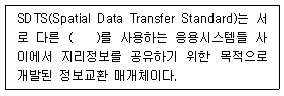
- 하드웨어
- 운영체제
- DBMS
- 소프트웨어
(정답률: 86%)
4과목: 지리정보시스템
61. 다음과 같은 폐합트래버스 측량결과를 얻었다. 여기서 누락된 BC의 거리를 구한 값은? (단, 오차는 없는 것으로 간주한다.)
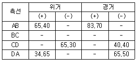
- 29.70m
- 39.70m
- 49.70m
- 59.70m
(정답률: 65%)
62. 측점 A, B의 좌표가 각각 A(390,0), B(0,780)일 때 측선 AB의 방위각은?
- 102° 56′ 56″
- 108° 20′ 12″
- 116° 33′ 54″
- 121° 20′ 15″
(정답률: 69%)
63. 2점간의 거리를 측정한 결과가 다음과 같을 때 표준오차는 얼마인가?
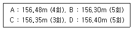
- 1.66cm
- 2.43cm
- 3.25cm
- 3.88cm
(정답률: 16%)
64. 그림과 같은 직사각형 지역에 지반고 13m인 평탄한 택지를 조성하기 위하여 필요한 토공량은? (단, 지반고의 단위는 m임)
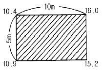
- 절토, 6.25m3
- 성토, 6.25m3
- 절토, 12.5m3
- 성토, 12.5m3
(정답률: 80%)
65. 노선측량에 이용하는 삼각망으로 가장 적당한 것은?
- 유심삼각망
- 사변형삼각망
- 다중삼각망
- 단열삼각망
(정답률: 67%)
66. 축척 1/25000지형도 상에서 두점 간의 거리는 5.65cm이고 축척이 다른 새로운 지도 상에서 같은 두점 간의 거리가 47.08cm이라면 이 지도의 축척은 약 얼마인가?
- 1/2000
- 1/3000
- 1/4000
- 1/1000
(정답률: 70%)
67. GPS(Global Positioning System)에 관한 설명 중 올바른 것은?
- GPS의 위치결정법에는 반송파 위상관측법만이 있다.
- L1파는 P 코드만을 변조한다.
- GPS의 구성은 우주부문, 제어부문, 사용자부문으로 나뉜다.
- L2파는 P 코드와 C/A 코드를 변조한다.
(정답률: 82%)
68. 지도의 종류 중 주제도라고 볼 수 없는 것은?
- 해도
- 도시계획도
- 식생도
- 지하매설물도
(정답률: 11%)
69. 축척 1/50000지형도에서 3% 구배의 노선을 선정하려면 주곡선 사이에 취해야 할 도상 거리는? (단, 주곡선 간격은 20m임)
- 20.4mm
- 13.3mm
- 10.6mm
- 7.5mm
(정답률: 34%)
70. 거리관측에서 경사면 60m의 거리를 측정한 경우 경사보정량이 2cm로 될 때 양끝의 고저차는?
- 1.55m
- 2.⑤m
- 2.55m
- 3.⑤m
(정답률: 50%)
71. 기지점 A~B 간을 트래버스 측량에 의하여 결합하였다. X좌표의 폐합차 = -0.15m, Y좌표의 폐합차 = +0.20m, 폐합비가 정밀도 1/11000 라면 측선길이의 합은?
- 5500m
- 2750m
- 1375m
- 688m
(정답률: 74%)
72. 평면측량(국지측량)에 대한 가장 올바른 설명은?
- 대지측량을 제외한 모든 측량
- 측량법에 의하여 측량한 결과가 작성된 성과
- 측량할 구역을 평면으로 간주할 수 있는 국지적 범위의 측량
- 대지측량에 비하여 비교적 좁은 구역의 측량
(정답률: 85%)
73. 지형공간정보체계에서 위상적 정보를 표현하는데는 래스터 구조와 벡터 구조가 있다. 벡터 구조가 아닌 것은?
- 스파게티 구조
- DIME 구조
- 아크-노드 구조
- GRID 구조
(정답률: 82%)
74. 지형공간정보체계의 조작처리 중 중첩분석에 대한 설명으로 옳은 것은?
- 하나의 자료층상에 있는 변량들간의 관계 분석
- 둘 이상의 자료층에 있는 변량들간의 관계분석
- 특정 위치를 에워싸고 있는 주변 지역의 특성 분석
- 일정한 패턴(Pattern)을 구성하는 선형의 특징의 상호연결 분석
(정답률: 79%)
75. 수준측량에 있어서 AB 두점간의 표고차를 구하기 위하여 (a), (b), (c) 코스로 측량한 결과 다음과 같다. 두점간의 표고차는 얼마인가?
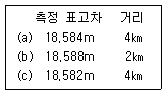
- 18.582m
- 18.584m
- 18.586m
- 18.588m
(정답률: 58%)
76. 결합트래버스 측량에 있어서 노선장이 4㎞되는 장소에서 폐합비의 제한이 1/500,000 일 경우 허용되는 폐합차는 얼마인가?
- 1.25㎝
- 1.00㎝
- 0.80㎝
- 0.60㎝
(정답률: 82%)
77. 다음의 수준측량에 대한 사항중 개인오차에 해당되는 것은 어느 것인가?
- 표척 조정의 잘못에 의한 오차
- 기포의 감도 불량
- 지구곡률 및 빛의 굴절에 의한 오차
- 온도변화에 의한 오차
(정답률: 63%)
78. 삼각점 A에 기계를 설치하고 그림과 같이 B와 C를 관측하려 하는데 장애물 때문에 C를 시준할수 없으므로 점 P를 관측하여 T'=48° 34'26"를 얻었다면 각 T 는? (단, e=5m, S=1267.65m, ψ =278° 18')
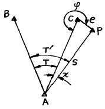
- 48° 24'14"
- 48° 21'01"
- 48° 15'55"
- 48° 04'37"
(정답률: 86%)
79. 1회 거리측정에서의 정오차가 ε 이라고 하면 같은 상황에서 같은 기기로 4회 측정하였을 경우 생기는 정오차의 크기는?
- ε
- 2ε
- 3ε
- 4ε
(정답률: 79%)
80. 다음 등고선의 성질중 옳지 않은 것은?
- 등고선은 절벽이나 동굴 등의 특수한 지형 외에는 합치거나 교차하지 않는다.
- 경사가 급해질수록 등고선 간격은 넓어진다.
- 등고선은 분수선과 반드시 직교하여야 한다.
- 같은 경사면에는 같은 간격의 평면이 된다.
(정답률: 85%)
5과목: 측량학
81. 다음 중 벌칙을 가장 무겁게 받는 것은?
- 입찰 행위를 방해한 자
- 측량표를 손괴한 자
- 측량업 등록을 하지 아니하고 측량업을 영위한 자
- 측량 성과를 위조한 자
(정답률: 71%)
82. 측량업자는 당해 측량용역기간중 대통령령이 정하는 바에 의하여 측량기술자를 용역현장에 배치하여야 하는데 이때 공공측량용역의 경우 배치기준으로 옳은 것은?
- 고급기술자 1인이상
- 중급기술자 1인이상
- 특급기술자 1인이상
- 초급기술자 1인이상
(정답률: 85%)
83. 지형도에 표기할 주기(註記)대상이 아닌 것은?
- 행정구역의 명칭
- 하천명
- 지적번호
- 도로번호
(정답률: 74%)
84. 다음 측량표 중 일시표지는?
- 검조장
- 임시측량표지막대
- 표기
- 측표
(정답률: 63%)
85. 기본측량을 위하여 설치한 영구표지 또는 일시표지가 설치된 지역안에서 그 표지를 손괴하거나 그 효용을 해할우려가 있는 행위를 하고자 하는 자는 다음 중 누구에게 그 표지의 이전을 신청하여야 하는가?
- 시장,군수
- 건설교통부장관
- 행정자치부장관
- 서울특별시장, 광역시장 및 도지사
(정답률: 86%)
86. 1:5,000 지형도상 경계 표시의 원칙은 어느 것인가?
- 경계는 그 경로가 불명확한 것을 제외하고는 이를 생략하지 아니하며 경계의 진위치와 기호의 중심선이 일치하도록 표시한다.
- 경계가 중복될 때에는 그중 하급경계 기호로서 표시 한다.
- 경계가 도로, 하천용수로등의 내측에 존재 할 경우에 는 좌측에 경계 기호를 표시한다.
- 경계기호가 주기 및 독립기호와 교차 할 경우는 0.3㎜의 간격을 두고 표시한다.
(정답률: 34%)
87. 토털스테이션의 구조·기능검사 항목이 아닌 것은?
- 기포관의 부착 상태 및 기포의 정상적인 움직임
- 연직축 및 수평축의 회전상태
- 위상차 점검
- 광학구심장치 점검
(정답률: 93%)
88. 측량기기의 성능검사대행자의 등록사항중 변경사항이 발생할 경우 변경등록 또는 변경신고를 하여야 한다. 이때 변경등록사항이 아닌 것은?
- 검사시설 또는 검사장비의 변경
- 기술능력의 변경
- 법인의 대표자 또는 임원의 변경
- 상호의 변경
(정답률: 79%)
89. 성능검사기관은 성능검사결과 규정에 의한 성능기준에 적합하다고 인정되는 때에는 검사필증을 당해 측량기기에 붙여야 하는데 성능검사필증에 기재할 사항이 아닌것은?
- 측량기기명 및 측량기기번호
- 검사유효기간
- 측량기기수명
- 측량기기성능
(정답률: 87%)
90. 국토지리정보원장은 기본 측량에 있어서 영구표지 및 일시표지를 설치하는 경우 종류와 설치장소를 누구에게 통지하여야 하는가?
- 시· 도지사
- 건설교통부장관
- 측량협회장
- 건설교통부차관
(정답률: 6%)
91. 측량법에 의한 과태료처분에 불복이 있는 자는 그 처분이 있음을 안 날로부터 몇 일이내에 이의를 제기할 수 있는가?
- 7일
- 15일
- 30일
- 60일
(정답률: 93%)
92. 공공측량의 측량 성과를 보관하는 곳은?
- 건설교통부
- 공공측량의 계획기관
- 공공측량의 작업기관
- 시· 군· 구 지적서고
(정답률: 71%)
93. 다음 설명 중 잘못된 것은?
- 기본측량성과를 사용하고자 하는 자는 국토지리정보원장에게 사용료를 납부하여야 한다.
- 국토지리정보원장이 발간한 지도를 복제하여 자유롭게 사용하거나 판매할 수 있다.
- 기본측량성과 등을 사용하여 지도 등을 간행하고 이를 판매 또는 배포하고자 하는 자는 간행하기 전에 국토지리정보원장의 심사를 받아야 한다.
- 정부를 대표하여 국제회의에 참석하는 자가 자료로 사용하기위하여 국토지리정보원장이 발간한 지도의 국외반출은 허가없이 할 수 있다.
(정답률: 94%)
94. 측량업등록의 결격사유로 잘못된 것은?
- 금치산자
- 파산선고를 받고 복권되지 아니한 자
- 금고 이상의 실형의 선고를 받고 그 집행이 종료되거나 면제된 날로부터 3년이 경과되지 아니한 자
- 측량업의 등록이 취소된 후 2년이 경과되지 아니한자
(정답률: 47%)
95. 건설교통부장관 또는 국토지리정보원장의 권한을 측량협회에 위탁할 수 있는 사항은?
- 측량영업실적 신고
- 측량업자의 등록취소 및 영업정지의 처분
- 공공측량의 심사
- 측량기술자의 보수교육
(정답률: 79%)
96. 공공측량 및 일반측량에서 제외되는 측량이 아닌 것은?
- 고도의 정확도를 필요로 하여 건설교통부장관이 고시하는 측량
- 지적법에 의한 지적측량
- 수로업무법에 의한 수로측량
- 국지적측량으로서 건설교통부장관이 고시하는 측량
(정답률: 23%)
97. 기본측량에 관한 연간계획을 수립하는 자는?
- 대한측량협회장
- 건설교통부장관
- 서울특별시장, 광역시장, 도지사
- 국토지리정보원장
(정답률: 39%)
98. 측량의 기준에 대한 설명으로 틀린 것은?
- 지리학적 경위도는 세계측지계에 따라 측정한다.
- 측량의 원점값의 결정 등에 관한 사항은 건설교통부령으로 정한다.
- 측량의 원점은 대한민국경위도원점 및 수준원점으로 한다.
- 위치는 지리학적 경위도와 평균해면으로부터의 높이로 표시한다.
(정답률: 84%)
99. 1:25,000지형도 도식규정에서 수애선의 표시방법으로 옳은 것은?
- 하천, 호수에서는 만수위
- 바다에서는 평균해수면
- 항공사진촬영 당시 수위
- 바다에서는 만조시의 정사영
(정답률: 74%)
100. 1:5,000 지형도의 계곡선 간격은?
- 5m
- 10m
- 20m
- 25m
(정답률: 74%)